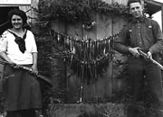
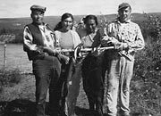
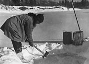
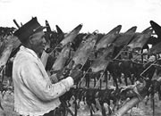
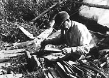
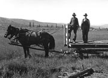

In the Yukon, with its challenging geography and climate, people have to be resourceful and skillful to survive. Traditionally First Nations people followed a seasonal round of activities, moving from place to place harvesting the resources available. These harvesting activities determined how and where people would make their homes.
There was a great wealth of natural resources in the territory. People hunted big game animals, such as moose, caribou and sheep, year-round. Arctic ground squirrels or “gophers” were dried in summer for food year-round. In the spring and fall people speared or netted beaver; in the winter, and through-out the year, they hunted rabbit; and in the cold winter months they trapped lynx, marten, fox, wolverine and wolf. Salmon and whitefish were a mainstay of their diet.
Groups easily adapted to changing circumstances. If game was scarce in a certain area, people might join relatives in another area where the hunting was better. The subsistence round was continual and essential to life. Nothing was wasted; meat, hides, sinew, bone, marrow, hooves, antlers and internal organs were all put to use.
As newcomers moved to the Yukon, they adopted or adapted many of these subsistence activities. This was especially important in the early years, when prices were high — even higher than today — and fresh foods were hard to come by.
Seasonal activities continue today. First Nations people still make seasonal harvesting part of their lives. Many other Yukoners also participate in a modified version of the seasonal round: picking berries; fishing; planting gardens; splitting wood; canning preserves; even harvesting dog hair to spin into fibre.
“Sha’kat: It’s a special time in August and September, gathering food for the winter. It’s like a harvest.”
Violet Storer
Yukon Archives interview, 1998
Continue to A lot of funLiving on the land
(Above) Linch Van Bibber with her pack dogs at the family’s summer home, Tay River, 1943.
YA, Van Bibber collection 79/2 #109
Dorothy Hoggan and Bill Hare with grayling, Mayo, August 2, 1923.
YA, Hare collection #6680
George Dawson, Mary Luke, Emma Shorty and Roxy Carriere at Mary Luke’s fish camp near Carmacks, 1965.
YA, Tanguay collection, 88/150 #2
Police Corporal Claude Tidd chops a hole in the ice for water, Twelvemile area, c.1938.
YA, Tidd collection #8121
Chief Peter Moses stretching muskrat skins, June 1946.
YA, Tidd collection #8242
Charlie Peter Charlie Senior stretching muskrat skins, c.1970. The spring muskrat hunt on the Crow Flats is a vital part of the Old Crow economy.
YA, Chief Zzeh Gittlit collection #9377
Men with team and wagon at Maisy May, June 1937.
YA, Geological Survey of Canada collection, 90/36 #83100